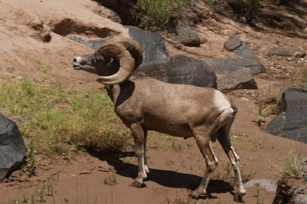
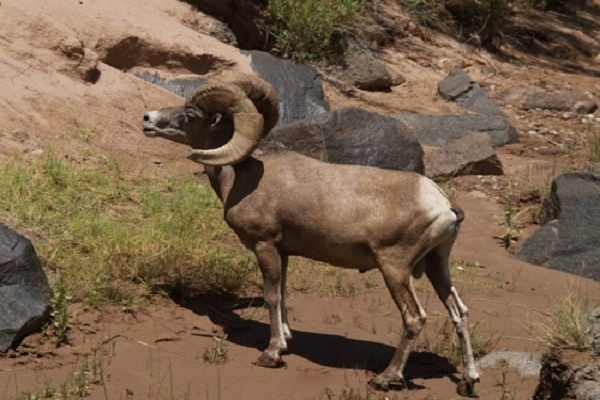
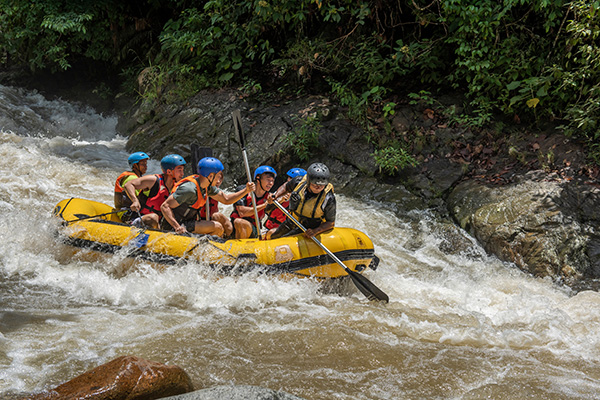
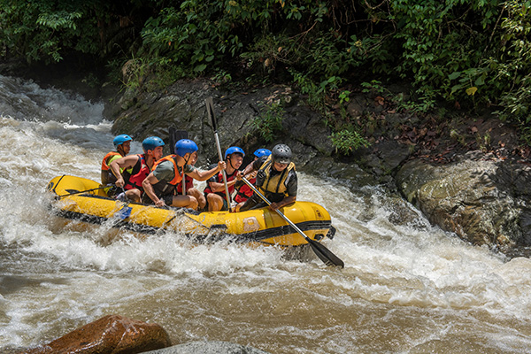
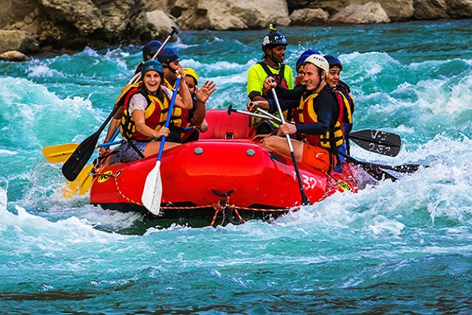
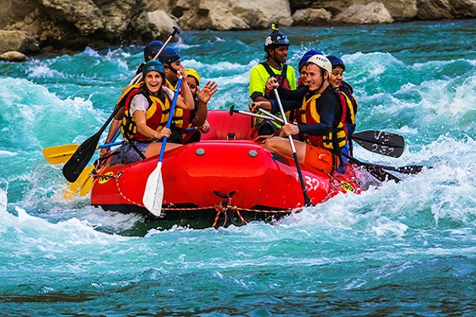

Rivers
Main Fork of the Salmon River, Idaho
Nestled deep in the Frank Church Wilderness of No Return winds the Salmon river. The Salmon was given the nickname long ago as the River of No Return by the people living near it because of the number of folks that came to visit and fell so in love with the rugged beauty of the river that they never left.
Herds of elk and deer graze on the hillsides around the river and bear and bighorn sheep are also commonly sighted. The river corridor is also lined with awe inspiring ponderosa pine which tower over the sandy beaches in the campsites and provide shelter from sun or rain when needed.
Let's not forget the rapids! They range from class I-IV. The Salmon is one of the longest undammed rivers in the United States. As a free flowing river the water is higher, faster, and colder in the early summer and lower, slower, and warmer in the late summer. There are good rapids all summer...but families with children who like to swim tend to appreciate the late summer's slower, warmer water more.
 

 


 



FAQ
Is this a good trip for kids? What are the age ranges you allow?
Absolutely this is a good trip for children of all ages. We have found however that children over the age of 8 seem to enjoy it more overall (And parents especially enjoy it more if their children are all over 8). A common concern we get from parents is that their children will be bored stuck on a boat for hours at a time. Surprisingly we deal with very few bored children of any age. The areas we are rafting through are some of the most beautiful in the world, and you never know what you might see around any corner. Not to mention the rapids which keep things very interesting. Each boat also comes equipped with a guide. It has been proven that river guides are unable to go for very long at all without telling stories...some of which are even true!
Is whitewater rafting safe? I don't even know how to swim! Can I still come?
As with all adventure sports, there is an inherent and assumed element of risk. To help ensure your safety, our guides are all certified in Wilderness First aid and all start with at least 3 years of rafting experience. The most common injuries are sunburns and injuries that occur on land. Everyone on commercial rafting trips wears coast guard approved life vest or personal flotation device (PFD). Many non swimmers go on rafting trips and have a great time. Your guide will give you an in depth and engaging safety talk before your trip begins explaining what you should prepare for and do in the event that you fall out of the raft
What is included in the trip?
We will provide all necessary camping equipment. This includes a sleeping bag, foam pad, waterproof duffle bag, small waterproof day bag, tent and a cot, eating utensils and camping chair. We provided water and lemonade during the day. Coffee, tea and hot chocolate are provided during the morning and evening hours. You may bring beer, liquor and soft drinks (in reasonable amounts, 2 cans per day). You may purchase these items either the night before the trip, or on your way to the put-in. 3 meals per day, plus snacks